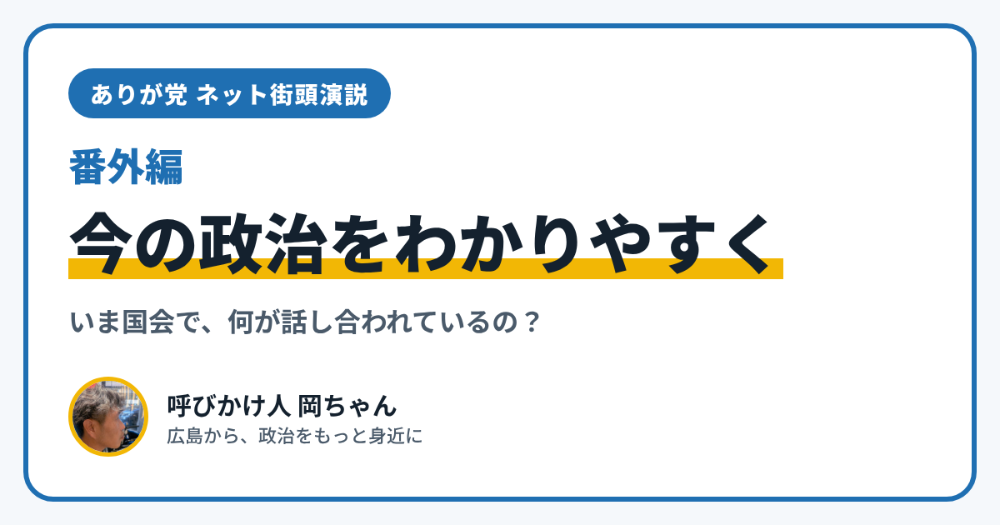

今の政治をわかりやすく｜2026年11月、国会でいま話し合われている3つのこと

こんにちは、ありが党の呼びかけ人、岡ちゃんです。「今の政治って、どうなってるの？」と思っている方に向けて、2026年11月の政治を、なるべくやさしい言葉でまとめました。
今の政治のかたち
今の総理大臣は、高市早苗さん（自民党）です。2026年2月の衆議院選挙のあと、国会でもう一度総理大臣に選ばれました。9月には内閣のメンバーが入れかわり、日本維新の会から初めて大臣が出ました。
いま国会は、10月5日から12月12日までの予定でひらかれています（臨時国会）。ここで話し合われている大きなテーマを3つ紹介します。
1. 食料品の消費税
食べ物や飲み物の消費税を、8%から1%に下げる法案です。2027年4月から2年間だけの予定です。11月6日に衆議院を通り、いまは参議院で話し合われています。くわしくは、こちらの記事でまとめています。
2. 国会議員の数
衆議院の議員の数をへらす話です。10月29日、自民党・日本維新の会・国民民主党の3つの党が、「比例代表」という選び方の議席を31へらすことで合意しました。いまの国会で法律にすることをめざしています。
3. 政治とお金
会社や団体が政党にお金を出す「企業・団体献金」のルールをどうするか、という話です。ルールをもっときびしくしたい党や、お金の流れをもっと公開すればいいという党など、意見が分かれています。前の国会からの話し合いが続いていますが、まだ結論は出ていません。
僕が大切にしたいこと
政治のニュースは、むずかしい言葉が多くて、遠く感じます。でも、消費税は毎日の買い物に、議員の数は僕たちの声の届き方に、つながっています。
ありが党は、「政治を、もっと身近に」をかかげて、広島で準備をしています。どこかの党の味方や敵ではなく、暮らしの困りごとから政治を考えたいと思っています。
このブログでは「ネット街頭演説」として、福祉の相談先や、災害のときの避難など、暮らしにかかわるしくみを紹介しています。よかったら、ブログの一覧やありが党のページものぞいてみてください。
「ここがわからない」という質問も大歓迎です。InstagramのDM（@ayu19841002）で、気軽に聞かせてください。
※この記事は、2026年11月13日時点のニュース（NHK、共同通信など）をもとに書いています。国会の話し合いによって、中身が変わることがあります。